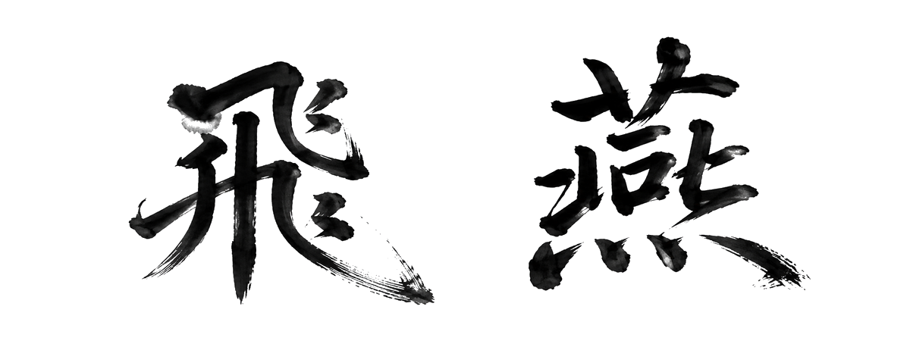
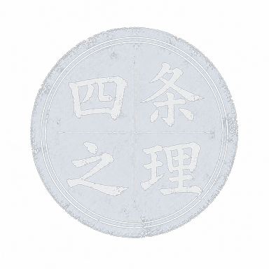
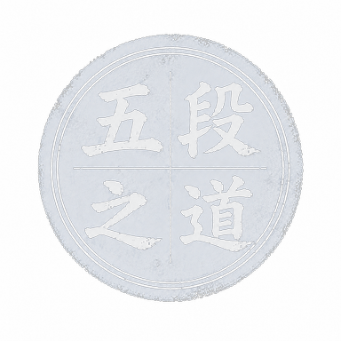
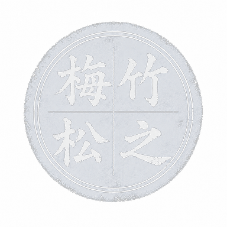
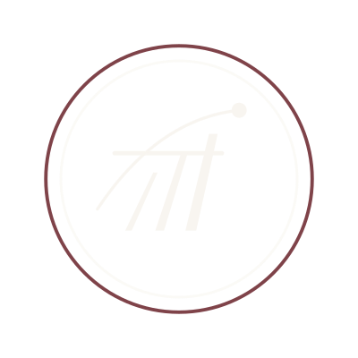

B2B HRtech / 教育DX
MIRAISE
サンプルLP / HRtech SaaS松プラン相当
「1人で組織の成長を見守る教育DX」をテーマにした人材育成SaaS。13セクション+QUEST設計+kpi-band 4枚+offer-band（先着10社）。3-judge Panel **7.93/10 PASS**（過去最高）。
サンプルLPを見る
速さ × 鋭さ × 美しさ
— LP DESIGN STUDIO —
AIで高速、手作業で丁寧に。最短翌日から。
「見た目」だけでなく成果を考えたLP制作。
0WORKS
公開サンプルLP
0FIELDS
対応業種カバー
0DAY
最短納期
LP制作を依頼するときに、こんなことで悩まれていませんか。
飛燕は、「成果につながるLP」を、設計から納品まで一貫して仕立てます。
「速く、美しく、そして成果につながる」
そんなLPを、飛燕がご一緒します。
架空の案件を想定して制作したサンプルLPです。構成設計・デザイン・コーディングのすべてを担当しています。
「1人で組織の成長を見守る教育DX」をテーマにした人材育成SaaS。13セクション+QUEST設計+kpi-band 4枚+offer-band（先着10社）。3-judge Panel **7.93/10 PASS**（過去最高）。
サンプルLPを見る中小企業向け月額制 Web マーケ伴走サービスのフルLP。手描きSVGイラスト多用＋PASONA設計＋3-judge Panel 7.8/10 PASS。Hero CTA＋Agitation＋Offerまで実装。
サンプルLPを見る月額¥3,278・24時間オープン・GPT生成画像15点をフル活用。PASフレームワーク・ペルソナ3名・Before/After・アプリUIまで実装した Conversion-First 路線。
サンプルLPを見る地域密着・家族向け歯科LP。hero collage 4枚 + 12セクション。土曜診療・急患当日枠・半個室診療室。医療広告ガイドライン配慮、Noto Sans JP 統一。
サンプルLPを見る20-30代女性 / IG広告流入 / LINE予約導線。Bold & Clear 路線、3-judge panel 平均 8.10 PASS。薬機法配慮表現、Noto Sans JP 太字統一、罫線中心の実LP直線文法。
サンプルLPを見る
壱の理由
01 / 構成設計
見た目のデザインだけでなく、「どの順番で、何を、どう見せるか」を設計。ファーストビューからCTAまで、ユーザー心理に沿った情報設計でコンバージョンにつなげます。
弐の理由
02 / スマホ最適化
LPの閲覧の7〜8割はスマートフォンから。最初からスマホでの見え方を基準に設計・コーディングし、どのデバイスでも快適に閲覧できるLPを制作します。
参の理由
03 / AI × 手作業
最新のAI（Claude Code等）でリサーチ・構成設計を高速化しつつ、デザインとコピーは一つ一つ人の手で調整。「速いだけ」では届かない繊細さを両立します。
肆の理由
04 / スピード対応
最短納期でも品質は妥協しません。効率化ツールを活用してコーディング時間を短縮し、確認・修正に十分な時間を確保。急ぎの案件にも柔軟に対応します。

業種・ターゲット・目的・ご要望をお聞きします。テキストでのやりとりでOKです。
セクション構成・コピーの方向性をご提案。この段階でしっかりすり合わせます。
確定した構成をもとにデザインとコーディングを進めます。途中経過もご共有します。
表示崩れ・リンク切れ・コピーの整合性などを確認。修正対応も含みます。
HTMLファイル一式をお渡しします。納品後の軽微な修正にも対応いたします。

ご予算とご要望に合わせて、梅・竹・松の三つのプランをご用意しています。
記載の金額はあくまで目安です。掲載点数・素材状況・ご要望に応じて柔軟に調整いたしますので、
ご予算が合うか不安な場合も、まずはお気軽にご相談ください。
開業記念キャンペーン 先着10名様限定
全プラン10%OFFでご提供。お問い合わせの際に「開業記念」とお伝えください。
2026年5月開業を記念して、最初にご縁をいただく10名様への御礼です。
梅UME — ENTRY
¥30,000FROM
テンプレートをベースに、ベーシックなLPを最短スピードで仕立てます。
名刺代わりの一枚におすすめ。
個人事業主・小規模事業者の初動立ち上げ。名刺代わりに使える1ページLPが必要な方。
竹TAKE — STANDARD
¥50,000FROM
構成設計から独自デザインまで一貫対応。
成果につながるLPを仕立てる、もっとも選ばれているプランです。
スタートアップ・中小企業の本格営業立ち上げ期。月数十件の問い合わせ獲得を狙う方。
松MATSU — PREMIUM
¥100,000FROM
業種リサーチから競合分析、コピー設計、独自イラスト・写真ディレクションまで完全対応。本気で勝つLPを仕立てたい方へ。
上場企業・成長企業の本気のCV最大化。月100件以上のリード獲得を狙う、戦略級のLPが必要な方。
※ 記載の金額はあくまで目安です。ご要望・素材状況・納期によって調整いたします。「この予算で相談したい」「プランに迷う」など、まずはお気軽にお問い合わせください。
※ 上記は基本料金（税抜）です。掲載点数・素材調達・撮影ディレクション等で別途お見積りとなる場合があります。
※ 修正回数を超えた場合は、別途承ります（1回 ¥5,000〜）。
※ 掲載のサンプルLPは無料素材で構成しています。実案件ではクライアント様支給の素材、または撮影ディレクション/AI生成画像で対応いたします（松プランは撮影ディレクション込み）。
※ 開業記念キャンペーン10%OFFは、お問い合わせ時に「開業記念」とお伝えください。先着10名様限定。
飛燕にご依頼いただくと、こんな変化が訪れます。
※ 効果は業種・市場環境・ご支給素材により異なります。約束ではなく、設計の方向性として記載しています。
情報の優先順位とCTA配置を見直すことで、フォーム到達率・問い合わせ数の改善が期待できます。仮説と検証ポイントもご提案します。
商品やサービスの強みを、頭の中の感覚から「刺さるコピー」へ翻訳。コンサルではなく、納品物に直接落とし込みます。
スクロール・クリック・読み返しまで、行動の流れを設計。指の動きとスクロールの呼吸が心地よいLPへ。
美しさのために成果を犠牲にしない。CVRや読了率を意識しながら、所作の品格まで両立させた設計をお届けします。
単発の納品ではなく、運用後の改善まで見据えた構成。トーン崩れを防ぐデザイントークン、保守しやすい1ファイル構造で資産に育つLPへ。
「テンプレでは伝わらない、けれど派手な装飾はいらない」
そんな飛燕の路線が合いそうな方は、ぜひご相談ください。
LP制作専門のフリーランス、飛燕（ひえん）のTAKETOです。「どの順番で情報を見せれば行動してもらえるか」を起点に構成を設計し、お問い合わせや申し込みにつながるLPを制作しています。最新のAIを活用した高速ワークフローと、デザイン・コピーの手作業による調整。「速さ × 鋭さ × 美しさ」を両立した、スマホファーストのLPをお届けします。
1DAY
最短納期
6WORKS
自主制作のサンプル
¥30KFROM
価格レンジ
対応可能な業種（自主制作6点でカバー）
梅プランで最短翌日（24時間以内）、竹プランで3〜5営業日、松プランで7〜10営業日が目安です。AI支援により他社では難しいスピードを実現しています。素材ご支給状況や修正回数によって前後します。お急ぎの場合は事前にご相談ください。
はい、もちろん可能です。竹・松プランには構成設計コンサルティングが含まれています。「LPはあるが成果が出ない」というご相談も承ります。
商用利用可能なフリー素材の選定までは基本料金内で対応可能です。撮影手配や有料素材購入、独自イラスト制作は別途お見積もりとなります。素材ご支給の場合はご支給データに基づいて構成いたします。
HTML/CSS/JS一式のファイルでお渡しします。サーバーアップロード作業、独自ドメイン設定、計測タグ実装などの公開作業もご相談ください。費用は作業内容に応じてお見積もりします。
各プランとも納品前の修正対応3回までを基本料金に含めています。納品後1週間以内の軽微な修正（誤字脱字・色味調整等）も無償で対応いたします。それ以降の修正は別途承ります。
はい、対応可能です。既存LPの分析と改善提案からスタートし、構成案レベルでのリニューアルか、デザイン刷新か、最適なプランをご提案します。
ヘルスケア・美容・BtoB・教育・飲食・健康食品・不動産など多業種に対応可能です。薬機法・景表法・特定商取引法など法令配慮が必要な業種にも対応いたします。風俗・出会い系等、一部お受けできない業種もありますのでご相談ください。
銀行振込での前払い、または着手時50%・納品時50%の分割払いをご利用いただけます。CrowdWorks経由のご依頼の場合は、CrowdWorksの仮払い・完了承認フローに準じます。
はい、全国どこからでもオンラインで対応可能です。チャット・メール・必要に応じてビデオ通話で密に連携いたします。海外在住の日本人の方からのご依頼にも対応可能です。
納品後の軽微な修正は1週間以内であれば無償対応します。それ以降のコンテンツ更新・セクション追加・A/Bテスト改善などは、月額または都度ベースの保守プランをご相談いただけます。

LPの新規制作・リニューアルなど、お気軽にご相談ください。
メッセージは24時間以内にご返信いたします。
CrowdWorksのプロフィールページに遷移します
メールで相談するhien.taketolp@gmail.com
24時間以内にご返信いたします